PA04 · Pet Care Platform · Phần tổng hợp UI của Quân
Giao diện các luồng chính của Pet Care Platform
Tài liệu mô tả màn hình chính và các luồng đăng nhập, quản lý hồ sơ, tìm cơ sở và đặt lịch. Ảnh được chụp từ bản chạy của repo ngày 22/11/2026 với dữ liệu giả lập; nội dung mô tả đi cùng từng màn hình để hướng dẫn thao tác.
Chủ thú cưng đăng nhập, tạo hồ sơ, tìm cơ sở, xem giờ trống và xác nhận lịch. Chủ cơ sở theo dõi lịch và cập nhật trạng thái. Khách có thể tìm cơ sở trước khi đăng nhập.
Phạm vi ảnh gồm desktop 1280 × 800 và đặt lịch ở chiều rộng 360 CSS px. Bản hiện tại dùng thông báo trong ứng dụng; đặt lưu trú, email và AI thuộc phạm vi phát triển sau.
Bốn màn hình đăng nhập, đăng ký, trang chủ chủ thú cưng và chi tiết hồ sơ dùng ảnh cùng mô tả từ bàn giao Quỳnh. Các màn hình còn lại do Quân chụp và bổ sung; nguồn được ghi dưới từng ảnh.
01. Trang chính cho khách
Mục đích. Giới thiệu nền tảng và đưa người dùng tới các thao tác chính.
Thông tin hiển thị. Thông điệp chăm sóc thú cưng, thanh điều hướng, nút tìm cơ sở, đăng ký và đăng nhập.
Cách dùng. Chọn Tìm cơ sở để tra cứu công khai; chọn Đăng ký miễn phí hoặc Đăng nhập để dùng chức năng theo vai trò.
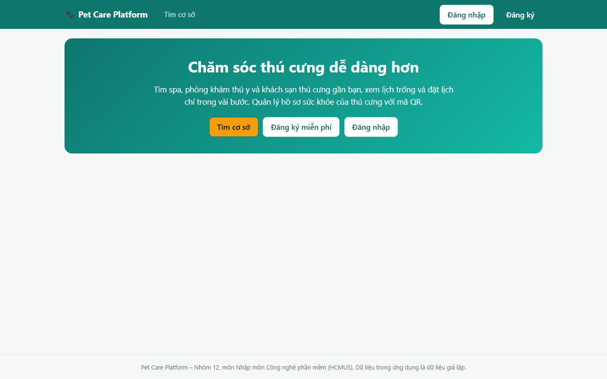
02. Đăng nhập
Mục đích. Cho người dùng đã đăng ký bắt đầu phiên và truy cập khu vực phù hợp với vai trò.
Thông tin hiển thị. Trường e-mail và mật khẩu, nút đăng nhập, liên kết đăng ký; phản hồi kiểm tra dữ liệu hoặc đăng nhập khi có.
Cách dùng. Nhập e-mail và mật khẩu rồi chọn Đăng nhập. Chủ thú cưng đến trang chủ; chủ cơ sở đến trang lịch hẹn cơ sở. Nếu đến từ đặt lịch, sau đăng nhập hệ thống trở lại cơ sở và lựa chọn đã lưu trên URL.
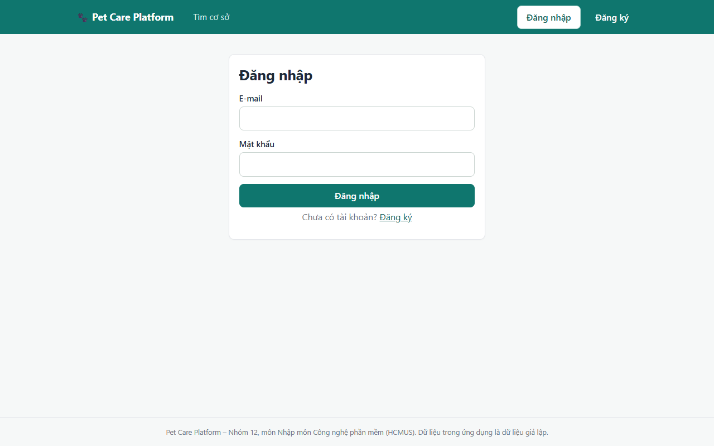
03. Đăng nhập với dữ liệu thiếu
Mục đích. Hướng dẫn sửa dữ liệu trước khi gửi yêu cầu đăng nhập.
Thông tin hiển thị. Lỗi tại các trường và dữ liệu đang nhập.
Cách dùng. Bổ sung các trường được báo lỗi rồi thử lại. Sai thông tin xác thực, khóa tài khoản và hết phiên có thông báo riêng.
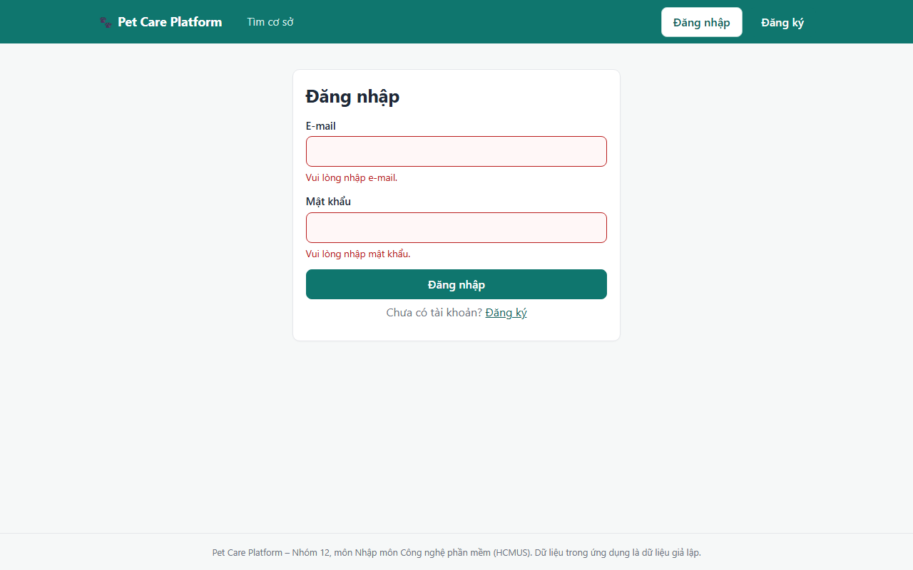
04. Đăng ký tài khoản
Mục đích. Tạo tài khoản chủ thú cưng hoặc chủ cơ sở.
Thông tin hiển thị. Loại tài khoản, họ tên, e-mail, điện thoại, mật khẩu và xác nhận mật khẩu.
Cách dùng. Chọn loại tài khoản, điền thông tin rồi gửi biểu mẫu. Sửa các trường được đánh dấu nếu dữ liệu không hợp lệ. Đăng ký thành công chuyển tới trang đăng nhập với thông báo xác nhận; e-mail trùng được báo để xử lý.
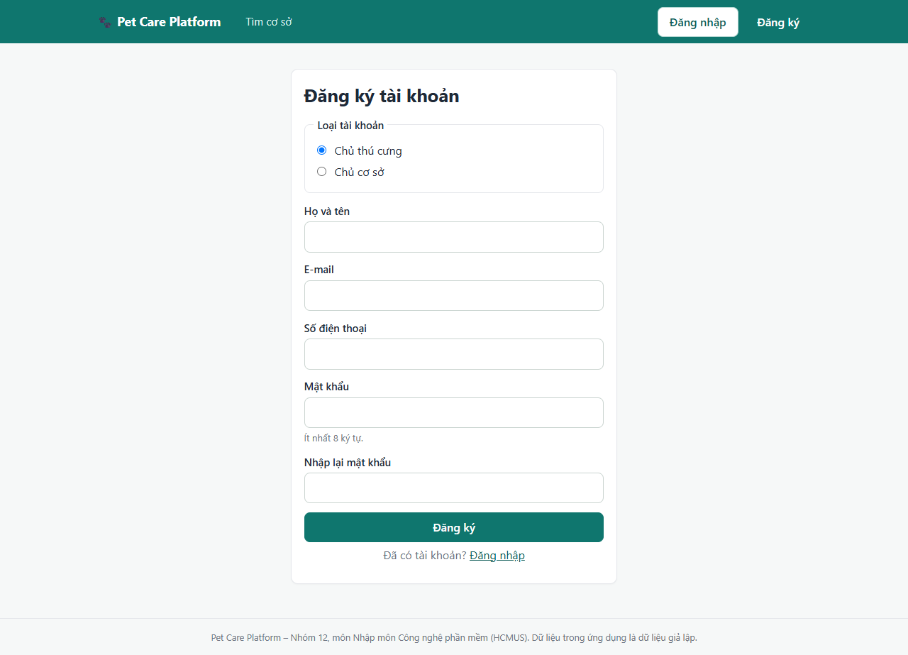
05. Trang chính của chủ thú cưng
Mục đích. Tập trung các thao tác thường dùng và lịch hẹn sắp tới.
Thông tin hiển thị. Lời chào, các lối tắt, lịch hẹn sắp tới và danh sách thú cưng của chủ sở hữu; bản hiện tại hiển thị tối đa ba lịch sắp tới.
Cách dùng. Chọn lối tắt để tìm cơ sở, thêm thú cưng hoặc mở lịch hẹn. Chọn một thú cưng trong danh sách để xem hồ sơ.
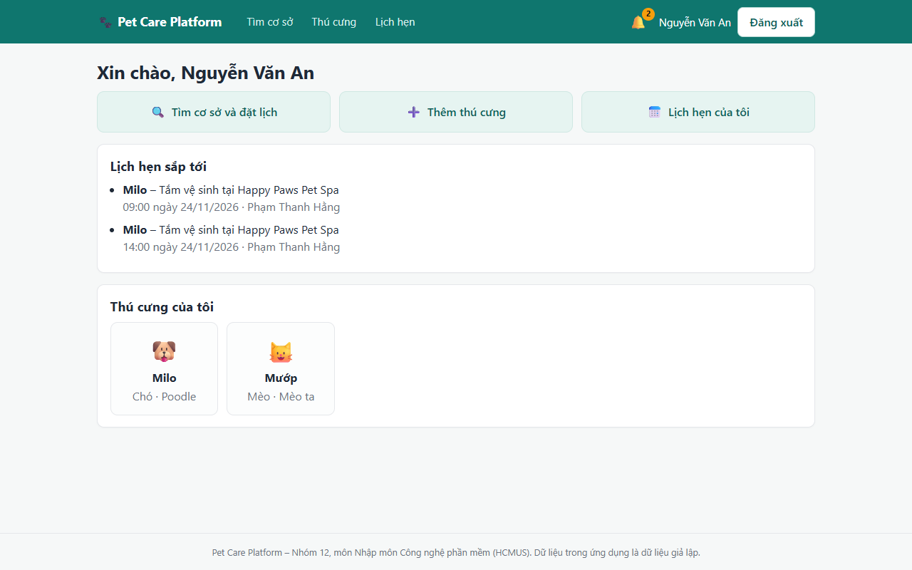
06. Danh sách thú cưng
Mục đích. Quản lý danh sách hồ sơ thú cưng đang hoạt động.
Thông tin hiển thị. Tên, loài, giống, giới tính, ngày sinh và các thao tác thêm, sửa, lưu trữ.
Cách dùng. Chọn tên để xem chi tiết, Thêm thú cưng để tạo hồ sơ, hoặc Lưu trữ rồi xác nhận. Hồ sơ lưu trữ không còn hiện trong biểu mẫu đặt lịch.
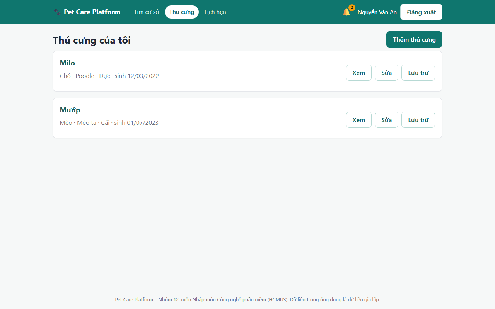
07. Tạo hồ sơ thú cưng
Mục đích. Ghi thông tin nhận diện và dị ứng của thú cưng trước khi đặt dịch vụ.
Thông tin hiển thị. Tên, loài, giống, giới tính, ngày sinh, mã microchip và dị ứng.
Cách dùng. Điền thông tin rồi lưu. Các trường thiếu, ngày không hợp lệ hoặc microchip trùng được báo để sửa.
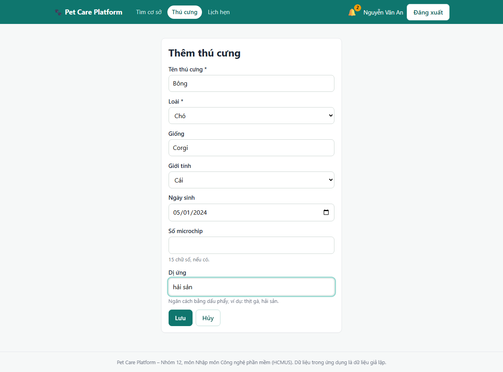
08. Chi tiết hồ sơ thú cưng
Mục đích. Cho chủ sở hữu xem và cập nhật hồ sơ, bản ghi sức khỏe của thú cưng.
Thông tin hiển thị. Thông tin cơ bản, dị ứng, ảnh QR, lịch sử cân nặng và tiêm phòng. Biểu đồ xuất hiện khi có nhiều bản ghi cân nặng.
Cách dùng. Mở thú cưng từ Thú cưng của tôi. Chọn Sửa hồ sơ để thay đổi thông tin, hoặc dùng biểu mẫu cân nặng/tiêm phòng để thêm bản ghi. Thao tác lưu trữ nằm ở danh sách và cần xác nhận. Ảnh QR hiển thị được; chưa coi luồng nhân viên quét QR UC05 là đã hoàn thành.
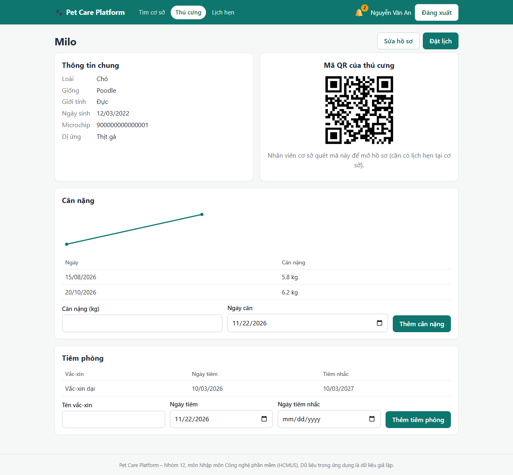
09. Tìm cơ sở
Mục đích. Tìm địa điểm chăm sóc phù hợp trước khi đặt lịch.
Thông tin hiển thị. Bộ lọc khu vực, loại dịch vụ, giá tối đa; sắp xếp theo tên hoặc giá; thẻ cơ sở với địa chỉ, dịch vụ và giá từ.
Cách dùng. Chọn bộ lọc rồi bấm Tìm kiếm; chọn tên cơ sở để xem chi tiết. Nếu không có kết quả, bỏ bớt bộ lọc hoặc mở rộng khu vực.
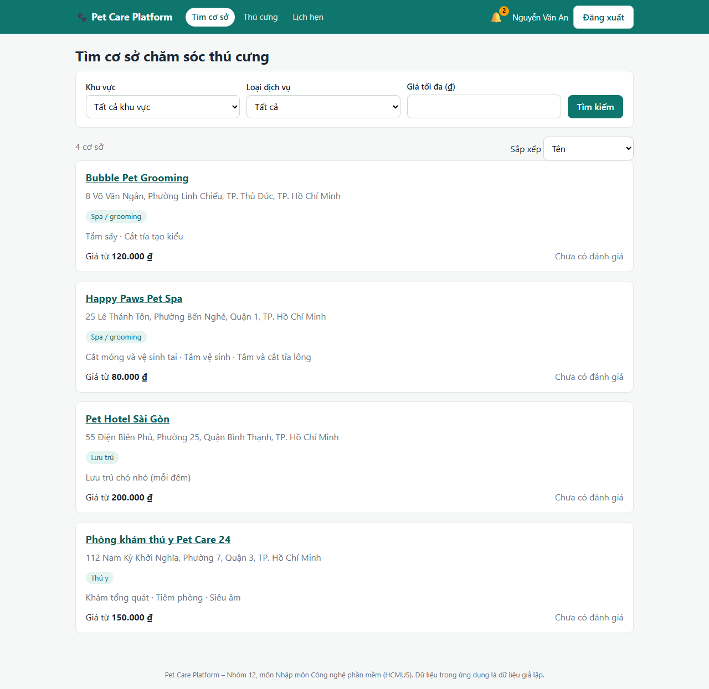
10. Kết quả tìm cơ sở có lọc
Mục đích. Cho thấy kết quả ứng với lựa chọn khu vực.
Thông tin hiển thị. Khu vực Quận 1, số lượng kết quả và cơ sở phù hợp trong dữ liệu mẫu.
Cách dùng. Đổi tiêu chí và tìm lại, hoặc chọn cơ sở trong danh sách để xem dịch vụ và giờ trống.
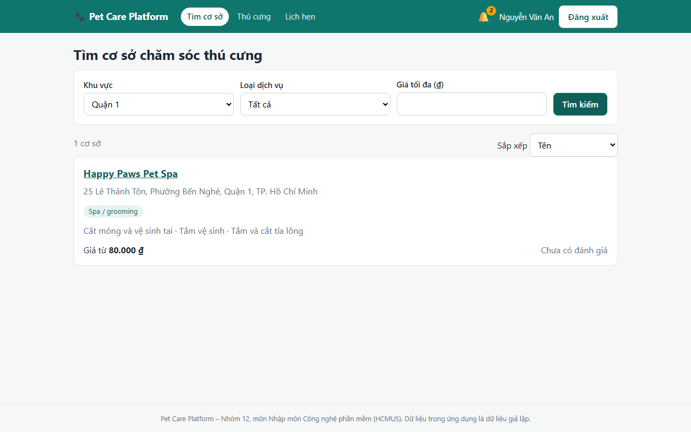
11. Chi tiết cơ sở và xác nhận đặt lịch
Mục đích. Chọn dịch vụ, thú cưng, ngày, nhân viên và khung giờ; kiểm tra tóm tắt trước khi tạo lịch.
Thông tin hiển thị. Mô tả, địa chỉ, giờ mở cửa, điện thoại, bảng giá; giờ trống; tóm tắt cơ sở, dịch vụ, thú cưng, giờ, nhân viên và giá.
Cách dùng. Chọn dịch vụ, thú cưng, ngày và nhân viên nếu cần; chọn một giờ trống rồi Xác nhận đặt lịch. Đổi ngày/dịch vụ/nhân viên phải chọn giờ lại. Hủy ở bước tóm tắt chưa tạo booking. Nếu chỗ vừa bị lấy, chọn lại từ giờ cập nhật; hết chỗ có gợi ý ngày khác. Chưa có thú cưng thì tạo hồ sơ trước.
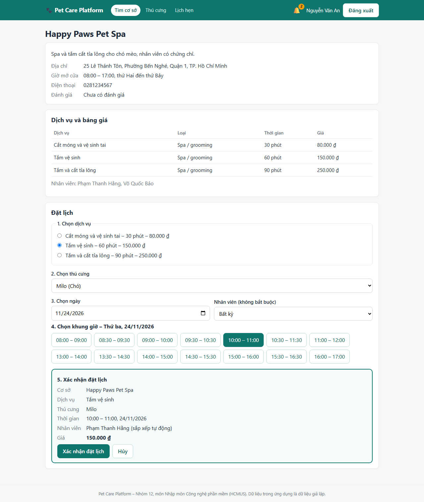
12. Đặt lịch thành công
Mục đích. Thông báo booking đã được tạo và dẫn tới danh sách lịch.
Thông tin hiển thị. Thông báo thành công với thú cưng, dịch vụ, giờ, ngày, nhân viên; liên kết Lịch hẹn của tôi.
Cách dùng. Chọn Xem lịch hẹn của tôi để kiểm tra trạng thái. Hệ thống kiểm tra lại chỗ trong giao dịch trước khi lưu và tạo thông báo trong ứng dụng cho hai bên.
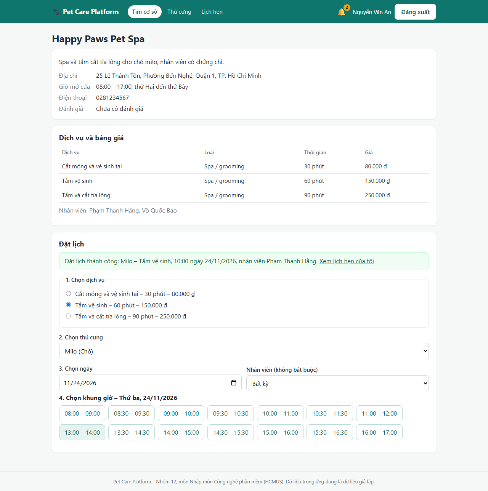
13. Lịch hẹn của tôi
Mục đích. Theo dõi lịch sắp tới, lịch đã qua và hủy lịch đủ điều kiện.
Thông tin hiển thị. Thú cưng, dịch vụ, cơ sở, giờ, ngày, nhân viên, trạng thái và hành động hủy hoặc thông tin liên hệ.
Cách dùng. Xem nhóm lịch sắp tới/đã qua. Chọn hủy rồi xác nhận khi lịch còn ít nhất hai giờ và đang ở trạng thái xác nhận; nếu không đủ điều kiện, liên hệ cơ sở.
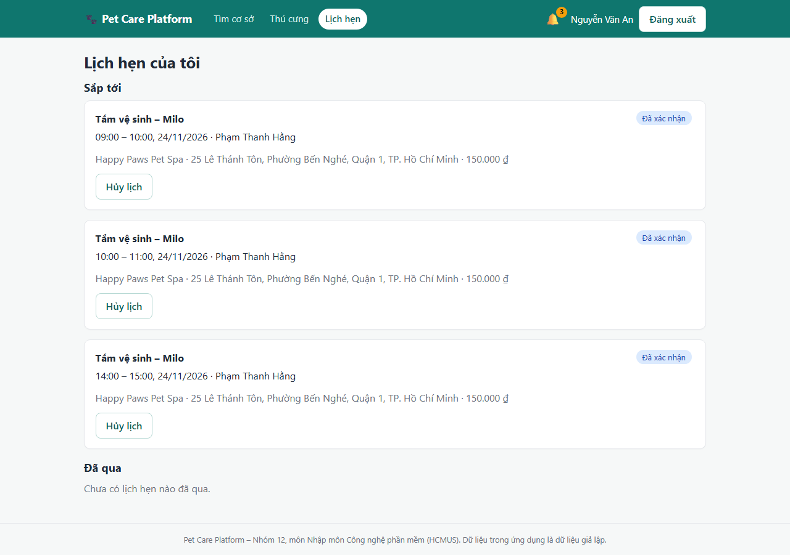
14. Thông báo trong ứng dụng
Mục đích. Theo dõi thông báo tạo, hủy và đổi trạng thái lịch hẹn.
Thông tin hiển thị. Tiêu đề, nội dung, thời điểm và trạng thái chưa đọc; nút đánh dấu đã đọc.
Cách dùng. Chọn Đánh dấu đã đọc cho từng mục hoặc đánh dấu tất cả. Bản hiện tại không gửi email và chưa có đầy đủ nhắc lịch nền.
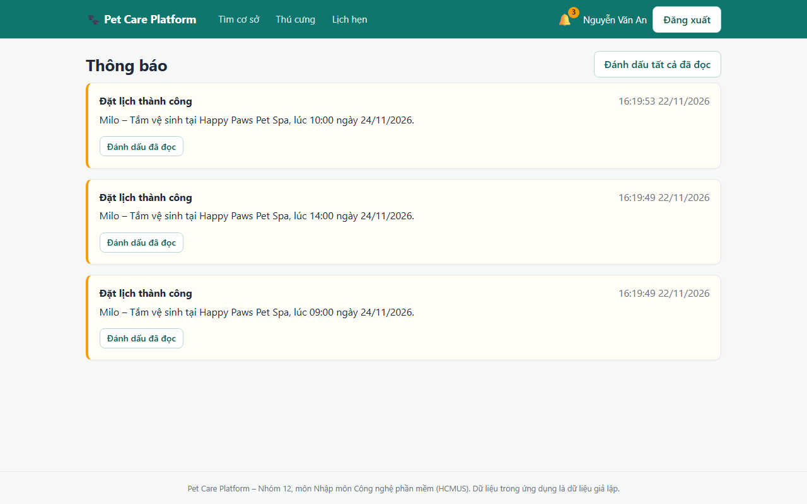
15. Lịch hẹn của cơ sở
Mục đích. Xem lịch tại các cơ sở được quản lý và cập nhật tiến trình phục vụ.
Thông tin hiển thị. Bộ lọc ngày/trạng thái; dịch vụ, thú cưng, dị ứng, nhân viên; nút check-in, bắt đầu, hoàn thành, vắng mặt hoặc hủy theo trạng thái.
Cách dùng. Lọc lịch, chọn hành động hợp lệ. Khi cơ sở hủy phải nhập lý do. Chủ thú cưng nhận thông báo; bản hiện tại chỉ mở route này cho chủ cơ sở.
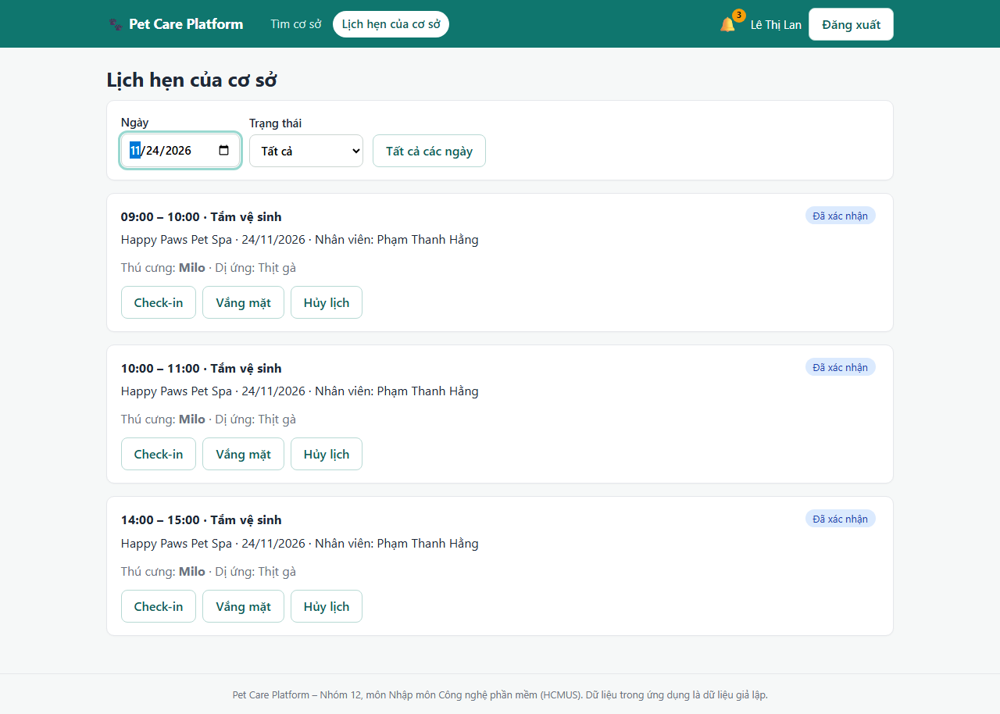
16. Đặt lịch trên điện thoại 360 px
Mục đích. Thể hiện luồng chọn và xác nhận trên màn hình nhỏ.
Thông tin hiển thị. Cùng thông tin đặt lịch như desktop, bố trí theo chiều dọc.
Cách dùng. Cuộn tới các bước, chọn dịch vụ/ngày/giờ rồi kiểm tra tóm tắt. Ảnh chụp ở viewport 360 × 740 CSS px; bộ chụp kiểm tra không tràn ngang.
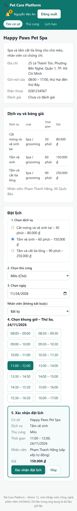